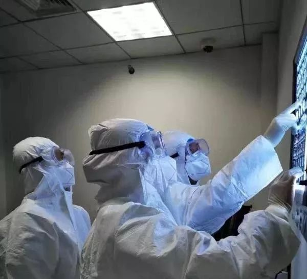
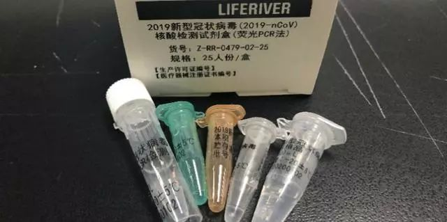

抗击新冠：CT结果将纳入诊断标准
原文链接 备份链接 试剂盒短缺局面缓解后，作为新冠肺炎确诊主要标准的核酸检测再度引发争论。有些在疫情一线工作的医生发现，一些患者核酸检测结果为阴性，病情却在持续发展，且家人也出现感染。除了核酸检测，不少专家提出，CT影像结果也应纳入新冠 …

王广发在2月3日晚上接受了《人物》的采访，这是他从新型冠状病毒肺炎中康复出院的第4天，也是他重新回到医院开始工作的第二天。作为北京大学第一医院呼吸和危重症医学科主任，他最初态度很谨慎，他说自己不想要再接受采访，但是，他愿意跟我谈一些技术上的问题。他愿意以一个呼吸科的临床医生，以及一个亲历过新型冠状病毒肺炎的患者身份，分享他对这场突如其来的疾病的理解——面对一个未知的新发传染病，我们应该怎么去认识它、理解它、应对它？科学的对策是什么？
所以，这篇文章的写作也是特殊的。在这篇对话稿件里，我们保留了大量王广发教授提到的临床经验、操作建议、诊断思考。这对于非医学背景的读者而言大概会有些枯燥，但是在这个疫情肆虐的时期，有效的临床经验是最宝贵的资源。希望这篇文章中所提到的操作细节能够对临床医生有所帮助，也能让不在一线的读者更多理解一种医学的细致思考方式。
新型冠状病毒肺炎，对普通人来说是一场突如其来的冲击，我们慌张地学习着与它相关的有限知识，去理解它的复杂，与它的变化赛跑。我们希望科学家能够给我们一个完美答案，但是对他们来说，这也是一个需要不断发现、认知的巨大未知。这是摆在现代医学面前的严峻挑战。医学并不能天然地马上给出解药，但是只要我们诚实地面对未知，分享真实的经验，在专业的指导下，实践科学的方法路径，我们就能知道最终的答案。
以下是王广发与《人物》的对话。
文｜李斐然
编辑｜糖槭
《人物》：我们在采访一些医生时，他们提到，诊断标准让他们遇到了很大的困难。
王广发：是这样的，新型冠状病毒肺炎这个病，疑诊的病例包括肺炎表现。虽说有一些轻症病例，有一些没有肺炎表现，但多数还是有肺炎的。所以现在有发烧、咳嗽、白细胞不高、淋巴细胞降低这些病毒性肺炎的表现，再加上流行病学史，我们就考虑是疑似新型冠状病毒肺炎。
《人物》：这是疑似的标准。
王广发：那么确诊呢，还是需要病原学的检测。病原学的检测现在可用的方法就是核酸的PCR检测或者基因测序。但是基因测序的特点是特异性高，敏感度差，所以它在临床上其实不太实用。它主要用在特别重大病例的认定，比如各省的第一例病例认定建议基因测序，确保检测它一定是这个病毒。但是目前来讲，临床上最重要的还是核酸的PCR检测。PCR本身来讲，现在的技术比较成熟，很多单位如果具备了实验室条件，做PCR一般是没有问题的。
《人物》：但是临床医生现在卡在了核酸检测这件事上。他们实际操作核酸检测的时候，遇到很大困难，有时候核酸测出来假阴性，测不出、测不对，有的需要反复两三次。
王广发：关于核酸检测阴性的问题，其实有很多技术层面的问题。比如，你的采样采得合不合适，也就是采样质量。实际上我们有一些经验，就是你采样采得浅，它的阳性率就低。你采样得采得深，可能阳性率就高。
什么叫采样采得深？就是用咽拭子采样的时候，尽量深一些，特别注意蘸取分泌物的量。因为我亲身经历了，我得病的时候护士给我采，采得很深，采得我非常不舒服、恶心，都要吐，但是我一采就是阳性的。采咽拭子，采得越深病人越不舒服，所以要提前跟病人说一声，让他有个心理准备，取得患者理解。
还有些病人会没有痰，这样没有痰的病人上呼吸道咽部病毒载量可能也是比较低的，这时候可以考虑用一下雾化吸入，做完雾化吸入以后，再留取痰液，这样也可能增加我们检测的准确性。需要注意的一点是，做雾化吸入最好让他单独在一个房间，因为这个过程有可能会带病毒，所以不主张在发热门诊这种隔离措施不充分的地方来做。
有很多技术细节会影响我们的检测，所以，实验室检测并不是那么简单的。

核酸检测试剂盒
《人物》：有医生提到，现在最危险的一种状况是核酸测出来是阴性的，但CT看上去是阳性的，是毛玻璃，现在的处理是家庭留观。
王广发：我觉得对于这样的病人，如果临床有症状，影像学符合，虽说实验室检测阴性——但不知道他是做了几次是阴性的——可以考虑多采一两次（样）。这对于还是以输入病例为主的省份的确是很有价值的，因为你一旦放走一个病人，假如他回家隔离不好，造成社区传播，那就有可能把输入性病例转化成本土型病例，本土型病例再扩展起来，就可能落地生根。落地生根后控制不住，那就容易出现第二个武汉。所以从防控角度讲，如果当地收治能力允许，对可疑病例建议更加严格的排查。
但是像武汉地区，就不太一样了，因为这样的病人太多了。现在面临的问题我确实很理解，因为那天我看到电视上，武汉金银潭医院一天做300份的标本，要做到晚上12点多，检测人员非常辛苦。这个要解决怎么办？我想就是要向科技、要向创新要效率。
《人物》：具体怎么做？
王广发：我们想做一个研究，就是一种快速检测的方法。它相当于一种床旁的PCR（注：又称即时检测POCT，是指病人在采样现场利用试剂盒或便携仪器即时进行的临床检测，是检验医学发展的一种新趋势），就是在床旁就可以做PCR，它现在是用于流感（病毒）检测的。这个在美国已经上市，而且（产品）在超市里都可以买到。这种床旁PCR的流感检测，半个小时就出结果，是很快的。
因为国家药监局要求对这种快速诊断试剂要做临床研究，所以我们本来就是准备好要和美国合作方做临床研究的，结果赶上这么一场疫情，所以我就强烈建议合作方和我们一起开发诊断新冠状病毒的方法。我觉得这真是特别需要。
我看到合作方给我提供的资料，（这种检测）对流感病毒的诊断敏感性和特异性几乎都是在95%。这是一个很高的诊断效率了，我觉得值得推广。我建议他们迅速地开发新冠状病毒快速诊断的方法，他们已经答应了，所以我们想跟他们合作，尽快把这个方法建立起来，形成产品，能够推向我们前线，这是我们的一个良好愿望，这几天我一直在沟通这个事，希望能够把这个工作推动得快一点。
当然，对它也要有一个合理的期待，它作为流感病毒检测能够达到95%的敏感度、特异度，但是它在新病毒上能不能达到，我还真不能百分之百打包票。但是，我觉得成功的可能性要比你从一张白纸从头研发要快得多，而且把握更大。
《人物》：你指的这种床旁PCR，就是像我这样的普通人，我去超市也可以买一个，在家里自己测？
王广发：对，是这样的。它在美国获批，不单可以在医院用的，在家也可以用。就像流感的快速诊断试剂，现在流感检测抗原，其实自己在家也可以做。现在的问题就是它的敏感度太低，也就是说，检测出来阳性只能说是，但是检出来阴性，你不能说不是。
就像警察抓贼似的，我从贼的兜里掏出来赃物了，我就说他是贼。但是有人怀疑他偷了，结果我把他抓着以后，从他身上没有搜到赃物，那么我作为警察判断，不能说他不是贼，但是我也不能把他抓起来。
《人物》：你是怎么想到这个主意的？
王广发：大家现在更加关注的是救治病人，但其实，一个很大的瓶颈是我们能不能迅速诊断病人，迅速根据诊断，把病人分流。如果有一个很准确、快速的诊断方法，我们的效率就会大幅度的提高。
因为我曾经在武汉，我看到的问题就是很多病人积压在发热门诊，这里面肯定有病人，但是也肯定有不是这种病的病人，他们混在一起，实际上就会互相传染。
SARS的经历和这次的经历我都看到了这种现象——当大量的病人涌入一个狭小的空间，又没有办法去分流病人，保持病人之间的空间距离，那么大家都拥挤在一起，病毒浓度高了，医生也在里面，这时候就容易发生交叉感染。所以我强调诊断，迅速诊断，迅速把病人分流。
另外，我看到武汉建了两所医院，扩张了很多病房，但似乎仍然满足不了病人的需要，其实这里面要提高床位的使用效率，该出院的病人及时出院，但是要有可靠的检测方法，去判断病人该不该出院。所有人（的采样）都要送到CDC检测？肯定不现实。像金银潭医院，一天检测300份标本工作人员都得干到12点，你想想这个压力有多大。所以现在一定要重视对快速诊断方法的快速研发，研发出来迅速评价，评价有效，迅速地推到我们前线使用，迅速地减轻前方的收治病人的一些压力，我觉得这是当务之急。
《人物》：我理解上这种跟公共卫生相关的产品，它的审批以及制造流程可能会比较长。那么类似于床旁PCR这种快速检测产品，预估它多久能落地？
王广发：我觉得检测方法相对简单，因为它不涉及到进入人体，这个实际上是可以很快。只要我们证实它的检测稳定，在实验室操作具有可行性，它的质量控制得到保障，我们就可以在临床上去检测这个标本。如果是有一定的差距，我们会分析在什么情况下我们用它，什么时候需要再做PCR进行验证，这样会有一个非常好的效应是，我们可以大大减少送检实验室的压力，实验室的压力会大幅度减轻。
当然，这个快速检测方法也需要培训，但因为这种比较简单，培训起来比较快，那么经过培训的人员就会比较多。这是真的我们特别特别需要。
《人物》：这种快速检测方法的技术原理是什么？
王广发：它已经有了专利，是成熟的技术，美国FDA（注：美国食品药品监督管理局）已经批准它在流感上的应用。它实际上是一种方法。这个产品有一种设计，电路的设计，元器件的设计，让它接上电源以后，能够自动做分析，这是它的核心技术。为什么我提出来它可能用于新型冠状病毒的检测呢？因为流感病毒检测的是它的核酸，新型冠状病毒检测的也是它的核酸，采用的都是PCR技术，也就是我给你一个模板，然后我用多聚酶进行扩增，就象用个模子，复制很多的砖瓦一样。假设原来是一根链，一个链我很难通过现有技术直接检测出来，但是扩增几十个循环后，可能变成很多条一样的核酸链，那时候再检测就很容易检测出来。这个技术用于新型冠状病毒的检测，我只是说我给它的模板不一样。给它流感病毒，它检测流感病毒；我给它新型冠状病毒，它就检测新型冠状病毒。
《人物》：这个成熟专利技术在中国落地，可能最花时间的环节是什么？
王广发：我觉得要把实验条件摸稳。这需要拿一些临床的标本进行实验，所以我建议他们赶紧在国内做这一方面的研究。一旦把它弄好，下一步就是把它形成产品，拿产品推向临床试用，我们叫做临床试验。做完临床试验，对比它和PCR的结果，看它的敏感度、特异度。我觉得放低了说，80%以上就很好了，如果它真的能像流感（检测）那样超过90%，那对疫情防控真的太有用了，至少能够更快地把病人进行分类。

工作人员正在进行核酸检测 图源CGTN记者团视频
《人物》：问题是现在特别是在湖北，有很多病人难就难在无法确诊。他们的一个现实困难是，疑似的时候……
王广发：我知道，就是疑似的时候要做核酸检测，但是又做不了核酸检测，然后病人又不敢放走，就积压在发热门诊或者隔离病房，又新来了一些病人，然后呢，没有空间收治。我明白，我太了解武汉现在的这个情况。因为在武汉的时候，我看发热门诊已经看到了这个苗头，在北京SARS疫情的时候，我真是亲身体验到了同样的情况。那时候在北大医院，急诊室的病人到院子里去打点滴，这就说明收不下，这病人该怎么办啊。
《人物》：医疗资源已经严重过载了。
王广发：对，实际上从北京的经验来讲，那是非常影响到疫情控制的重要一环，武汉的情况我觉得现在已经是过了那个时期，但就是现在仍然面临着类似的问题。
《人物》：所以假定这个快速检测方法能行，那么从现在开始，到新的快速检测方法落地，这中间我们有更好的缓冲解决方案吗？
王广发：影响核酸检测结果的两个因素，一个是试剂，我不是实验室的专家，我没有太多的发言权。但是这里面有一些技术上操作的要点，各地做的时候要注意这些问题。
比如，我们现在发现一些病人表现的是上呼吸道症状，打喷嚏、流鼻涕，所以这种情况下采鼻拭子有可能会阳性（准确率）更高。这个在卫生部最新的指南当中已经提出来了，原来我们写的是咽拭子，现在写鼻咽拭子，大家要结合病人的症状来决定。
最开始我们实际上不太认识这个病的全貌，当时觉得鼻塞、打喷嚏、流鼻涕不是它的特点，我自己得了以后深深体会到，有认识上的变化。理论上哪个地方病情重，你就应该采哪个地方的分泌物。但这是我的个人经验，没有经过特别严格的研究。
另一个因素是病人的因素。比如有的人在疾病特别早期，症状很轻，他的病毒载量很低，这时候采样有可能就测不到。比如留痰的采样方法，尽量深咳留痰。需要特别注意，千万不要在封闭的空间里面留痰，要注意对其他人的保护。像那次晚上我留痰，就是自己跑到室外，找个没人的地方深咳。
假阴性、假阳性，我们不能完全避免，所以碰到一个阴性结果，大家要综合分析，把所有环节都考虑到，这样才能减少误判。我们的临床大夫要很细致地去询问，你是上呼吸道症状为主，还是下呼吸道症状为主，问得细一点，这很重要。比如采鼻拭子的同时，如果能同时查一个咽拭子，或者有痰再采一个痰液，采得多了，阳性（准确）率可能也会高。
从临床上我们留标本，实际上是有一些讲究的。标本采样水平提高了，诊断阳性率就会提高。
《人物》：今天有医生提出，很有经验的大夫是可以看出来肺部CT差异的。能不能把这个也加入诊断标准，和核酸检测并列二选一？
王广发：这不行。为什么不行呢？因为有类似表现的肺炎其实还挺多的，就是有些病毒性肺炎完全可以是这样的，也可以是毛玻璃，所以不能以此作为确诊的标准。
肺部CT是疑似的标准，你有了影像学特征，列为疑似，这个没有问题，按照疑似进行隔离、排查，甚至进行相应治疗，这都没有问题。但是如果你把病人仅仅依据影像学判断确诊，这存在一个风险，就有可能把不是新冠肺炎的无关病人诊断为确诊了，和其他病人混在一起交叉感染，结果就算他不是，最后也得是了。这样是不可取的。
我很理解，为什么医生提出来这样的建议，就是因为他们觉得检测能力不足，卡在那儿了。我很理解很理解，真的很理解，所以我也是真的特别特别积极地推动（快速检测）。我看到有一些公司已经推出来了快速诊断试剂，我就讲，尽快地把这些试剂，赶紧评价，评价真实有效了，赶紧推到前方去，真正地帮助我们前线的医务人员，减轻一些负担。
《人物》：你看自己的肺片能看得出来是新冠肺炎吗？
王广发：我看我的肺片是很像了，但是我们对这些肺片的总体描述是什么呢？叫非典型肺炎，有影像学特征，白细胞不高，肺内啰音不多。临床医生的判断，判断来判断去也就是到病毒性肺炎，然而它到底是流感，还是新冠状病毒肺炎，实际上我们不知道。这是也是我想要跟大家做的一个知识普及，其实临床大夫不容易，他有很多临床思维，一般人是理解不了的。
过去我们同行有一些是不搞临床的专家，就说，那个SARS你们怎么就认定不了呢？你们临床（怎么做不到）说是就是，说不是就不是。我就跟他解释，我可以判断出来它是一个病毒性肺炎，它有流行病学史，我最多就断定到它是一个传染性的病毒性肺炎，再往深入我就没法定了。它到底是腺病毒、流感病毒、SARS冠状病毒，还是其他的，我就没法定了。
我们临床医学并不是一加一等于二那么简单，临床医生的判断有时候真的是需要实验室，它需要考虑很多因素，做一个综合的判断。

图源武汉协和医院微信公众号
《人物》：这意味着，尤其是面对一个未知的新发疾病，临床大夫的经验最终一定需要落在像核酸检测这种病原学的诊断上，才能给它最后盖章？
王广发：对，因为我们现在处的时代已经不是那个时代了，像我们几十年前诊断肺炎，大概也没有办法去做那么多的病原学的检测。现在我们办法多了，才能发现这些传染性肺炎。
《人物》：但是为什么现在会有这样的一种认知落差，就是一方面我看到咱们有了很好的技术，有试剂盒，有好的预警系统，但结果看上去还跟SARS的时候很像？
王广发：不一样，不一样，那明显的不一样了。现在我们诊断基本上都要依据核酸检测阳性才能定，这和SARS当时真的完全不一样了。因为我是两次的亲历者，所以这一点我的感受很强，我们的诊断方法是不一样的，这次的方法更加精准。
但是，差别在于这一次的疫情的确是和SARS不太一样的。比如SARS期间，我不敢说百分之百，至少很大程度上是没有（这次疫情里出现的）隐性感染者，或者特别轻症的感染者，甚至是无症状的隐匿病例。别看它轻，它在流行病学上意义很大，就是因为它排毒，它排毒别人还警觉不了，因为不发烧嘛，它就很容易传。（注：根据卫健委的第五版诊疗方案，目前所见传染源主要是新型冠状病毒感染的患者。无症状感染者也可能成为传染源。）SARS的时候我们还真的是特别关注有没有这样的病人，至少我们没有看到明确的这种病例。
这次的新冠状病毒感染，轻症的病人比较多，这说明了什么？这些轻症病人容易被忽略，容易造成这个疾病传播，我觉得这是很重要的不同点之一。
《人物》：我刚才指的是人们所感受到的恐慌和无措，是一样的。
王广发：恐慌呢，我觉得当时我们在北京，武汉人是感受不到的。其实北京当时的情况和武汉的情况，从人的心态上来讲是相似的，大家都比较紧张，比较恐惧，这个可以理解，因为疫情都是比较严重，但是实际上大家还应该有信心。我们现在的防控措施是应该能够把疫情控制下来的，只不过我们需要耐心，需要等一段时间，我们的防控的这个效果起作用，有一定的延迟。比如说我把所有发病的病人都收进去了，但是外面还有没发病的病人，会随着潜伏期逐渐出现，假如我们把所有病人都找到了，那么14天以后就会有一个明显的新发病例减少。当然这是假设，我们把所有的病人都收进去，现在看有一定的困难，但是你把大多数病人收进去，也会对疫情有好处。随着又在扩建医院，又去了一批医疗队员，大家还是在加强这个力度，所以我相信武汉会逐渐往下走，出现拐点，这个是我们期待的。
《人物》：你现在怎么理解这种病？现在有一种情绪是困惑，看到现在公布的数据，一方面看到它很强，传播途径越来越多，飞沫、接触、现在连门把手上也可以检测到了，但另一方面很多致病表现是轻症，全国病死率不到3%。这是不是有点像有一点重的流感？
王广发：不对，不是这样，流感光看病死率，可能觉得没什么，一般在1%以下。死亡率每10万人1.4-16.7人，可是流感总数多，涉及人口特别多。它的绝对死亡人数，那一看，全世界每年几万到几十万人啊，那就相当可怕了。而现在的这个疫情，到现在武汉地区病死率超过3%，相对来讲病情比较重。不是说病情重、病情危急，疫情就严重，站的角度不一样。我觉得还是得从科学上去理解这个疾病，其实不是那么简单的。
《人物》：我们对它应该的警惕来自于它是一个我们并不完全理解未知疾病。
王广发：对，它是一个新的疾病，我们才刚刚认识它的一点。我们主要是怕它什么呢？怕它再有一些基因的突变。像钟南山院士，他一直怀疑有没有超级传播者，就是怕它基因逐渐变异，变异完了以后就特别容易感染人。
为什么大家当时对流感大流行特别恐惧，实际上美州的新发流感要远超过我们现在这个疫情的损失，虽然它总的病死率并不高，但是涉及影响面太大了。大家恐惧的就是它这种传染性，如果再整合出现像我们讲的禽流感，高致病的禽流感人群的病死率大概在50%到60%。如果有一个疾病能够像流感一样传播，而它的致病性又可以像禽流感这么严重，那就非常可怕了。所以我们应该警惕的是这个。
但是目前来讲，看来这个病毒至少它的致病性没有那么强，它的传播肯定不如流感。
《人物》：如果不是有这样的一个疫情，本来冬季这个时候您会是在主攻什么样的病？
王广发：我在医院的这个危重呼吸科，专攻疑难危重病，但因为我们很多是外地病人，现在这个阶段，病人来就诊的少了。我们现在全院已经上班了，我也已经上班了。其实我们准备着再去派出医疗队支援武汉，我们已经有了两批的医疗队员，我们科的两位副主任都已经在武汉了，我们院长也在武汉。家里（北京）工作还在进行，但是我们还是准备着随时再把人员派到武汉前线去。因为疫情比较紧张，昨天卫健委召开一个讨论第五版的治疗方案的会，我昨天就出去开会了。因为有一部分在武汉，像钟院士在广州，专家组大部分人又在北京，我们是开的视频会议，见到很多老朋友，见的钟院士、王辰院士和李兰娟院士，我们都很高兴，他们也很高兴我能那么快出院。另外我们还肩负着北京的疫情防控，压力也是相当大的。
《人物》：从医学统计数据上来看，看到哪些指征或者哪种表现的时候，我们就可以放心地出来彼此见面了？
王广发：我觉得这个时间可能还要比较长一点，至少我们要看到疫情的拐点。疫情的拐点是什么呢？我们现在的新增病例还在增加，那么，直到有一天我们看到了新增的病例在减少，这时候就出现拐点了。我们什么时候就安全了呢？我们看到新增的病例逐渐没有了，这时候才可以说比较安全了。大家关注一下每天的这个数字，对疫情的判断是有一定帮助的。但疫情的走势和我们的措施是否到位，社会人口的流动等是有关系的，多种因素决定了疫情的走向，现在还很难下明确的结论何时疫情才能完全控制。另外我想说，个人是我们防控疾病最重要的一道防线。政府有责任，我们的各种医疗机构有责任，但是最后还得落实到个人。对个人的健康的负责，这是最后一道防线。

图源B站UP主林晨同学视频
我们关心科学和技术，如有相关的经验、启发、困惑希望沟通，欢迎联系lifeiran09@163.com或者微信号goodtimemusic
没看够？
长按二维码关注《人物》微信公号
更多精彩的故事在等着你

原文链接 备份链接 试剂盒短缺局面缓解后，作为新冠肺炎确诊主要标准的核酸检测再度引发争论。有些在疫情一线工作的医生发现，一些患者核酸检测结果为阴性，病情却在持续发展，且家人也出现感染。除了核酸检测，不少专家提出，CT影像结果也应纳入新冠 …
原文链接 备份链接 武汉各大医院发热门诊的紧张态势已有一周，七家定点医院启动才两天已被压到极限。 武汉不缺顶级医院，不缺顶级专家，不缺顶级医疗能力，缺的是公共卫生防控能力、行政效率和疫情处理流程。 在患者和大医疗机构之间，未见到基层 …
原文链接 备份链接 【财新网】（记者 刘登辉）截至1月22日，全国新型冠状病毒确诊案例已达548例。病例数量近几日迅速增加，34个省级行政单位仅有新疆、西藏、青海、甘肃、内蒙古、陕西未出现确诊和疑似案例。防控形势十分危急。值得关注的是， …
原文链接 备份链接 武汉市各区正在加紧把所有发热人员集中隔离，并进行全部发热人员的检测，目的是让疫情全部暴露出来，之后疫情防控也将从“攻坚战”转至“歼灭战” 图/法新 文 |《财经》特派武汉记者 言清 王小 编辑 | 王小 “今天的会非 …
原文链接 备份链接 作者 | 江晓川 编辑 | 张庆宁 出品 | 棱镜·腾讯小满工作室 欢迎下载腾讯新闻APP，阅读更多优质资讯 2月3日，国家卫健委高级别专家组成员李兰娟院士在接受央视采访时表示，武汉目前检测试剂（盒）数量不够……希望 …